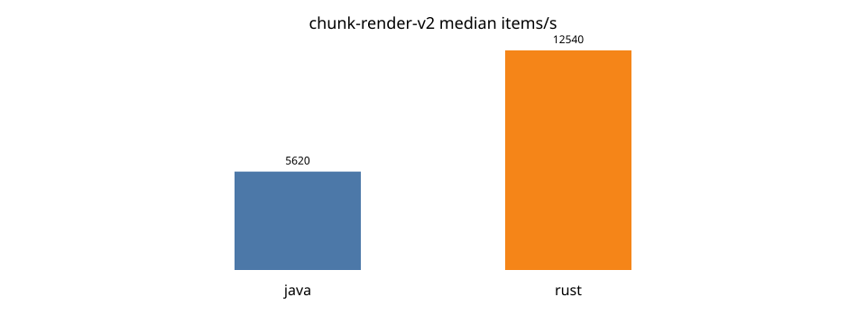
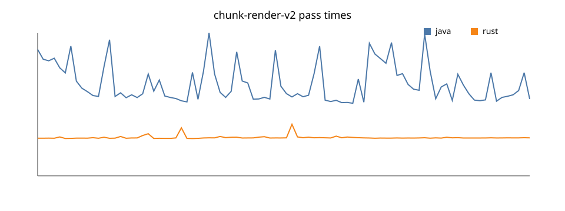

passed: true
| java | rust | |
|---|---|---|
| min | 3971185 | 2040532 |
| median | 4626641 | 2073289 |
| p95 | 7184998 | 2163312 |
| max | 7825349 | 2819065 |
| items/s | 5619.627716954914 | 12540.461074167662 |
| checksum | -5578976407213116928 | -5578976407213116928 |
| passed | true | |
| speedup | 2.231546590948006 | |

